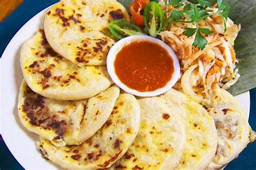
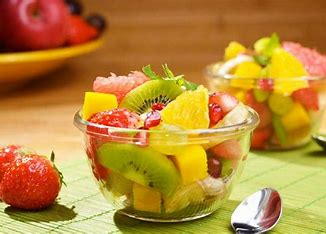

Pupusas
Deliciosas pupusas de queso y chicharrón con curtido.
$2.00 cada una

Sopa de Res
Caldo tradicional con vegetales, carne de res y yuca.
$5.50

Ensalada de Frutas
Refrescante ensalada con frutas de temporada y miel.
$3.00